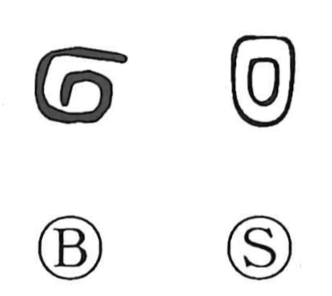

回

Kun: mawaru, mawasu, meguru | On: kai, e
to turn ・ to revolve ・ to rotate ・ to return
Explanation
回 depicts water turning back upon itself in a swirling current. The early enclosing or coiling lines give the movement a compact shape. From circling water come turning, revolving, and making a circuit, then returning toward a starting point.
洄 makes the water element explicit. 淵 names the deep place in which water gathers, and the relation was used in personal naming: Confucius's disciple 顔回 had the courtesy name 子淵. The given name and courtesy name answer one another through the image of circulating water.
A completed circuit also provides a way to count repeated actions, giving 回 its use for an occasion or ‘time.’ Turning away or aside supplies further senses of bending, avoiding, and deviating.